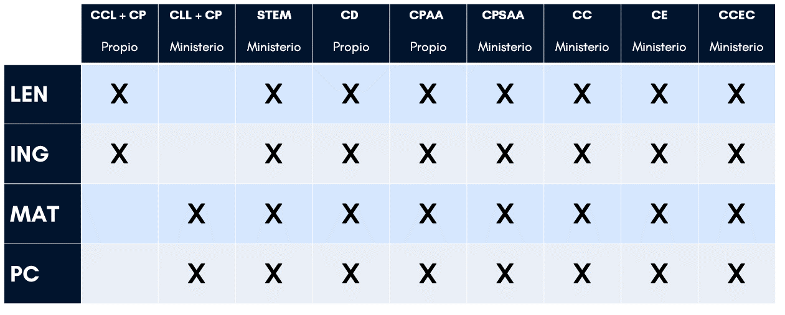

Descriptores de las competencias claves trabajadas en este REA
A continuación se incluyen los descriptores de las competencias clave estipuladas por la normativa trabajadas en este recurso.
| COMPETENCIAS CLAVES | CLAVE DE LOS DESCRIPTORES |
|---|---|
| Competencia en comunicación lingüística (CCL) | CCL3 |
| Competencia plurilingüe (CP) | CP2 |
| Competencia matemática y en ciencia, tecnología e ingeniería (STEM) | STEM1, STEM2, STEM3, STEM5 |
| Competencia digital (CD) | CD1, CD3, CD4, CD5 |
| Competencia personal, social y de aprender a aprender (CPSAA) | CPSAA1, CPSAA3 |
| Competencia ciudadana (CC) | CC3, CC4 |
| Competencia emprendedora (CE) | CE1, CE3 |
| Competencia en conciencia y expresiones culturales | CCEC3 |
Y en referencia a los marcos de elaboración propia de las siguientes competencias clave:
| COMPETENCIAS CLAVES | DESCRIPTORES |
|---|---|
| Competencia digital |
1.2.1. Analizar, comparar y evaluar de forma crítica la fiabilidad y seriedad de recursos de datos, información y contenido digital. Analizar, interpretar y evaluar de forma crítica datos, informaciones y contenidos digitales. 2.2.1. Compartir datos, información y contenidos digitales con otros a través de la tecnologías adecuadas. Hacer de intermediario y ser capaz de referenciar la información compartida. 3.4.1. Desarrollar secuencias de instrucciones aplicables a sistemas computacional para solucionar un problema dado o ejecutar una tarea determinada. 5.1.1. Identificación de problemas técnicos en el uso de dispositivos y entornos digitales, y resolución de éstos (desde los más básicos a los más complejos) 5.2.1. Valoración de necesidades e identificación, evaluación, selección y uso de herramientas digitales y posibles respuestas tecnológicas para satisfacerlas. Ajustar y personalizar entornos digitales a necesidades personales (accesibilidad). 5.3.1. Utilizar herramientas y tecnologías digitales para crear contenidos, procesos y productos innovadores. 5.4.1. Identificar dónde debo mejorar o actualizar mis propias competencias digitales. Ser capaz de ayudar a otros en el desarrollo de sus competencias digitales. Buscar oportunidades para el auto aprendizaje y mantenerse al día de la evolución del mundo digital. |
| Competencia de aprender a aprender |
1.3.2. Organiza los aprendizajes para generar ideas nuevas proponiendo hipótesis, teorías, nuevas argumentaciones, invenciones creativas, diseños innovadores o caminos alternativos para resolver problemas. 2.1.1 Conocer e interpretar correctamente lo que debe realizar en la tarea o actividad planteada y reflexionar sobre las habilidades que debe poner en juego para resolverla. 2.2.1. Identifica las propias habilidades, recursos y experiencias vinculadas a las posibilidades y limitaciones respecto a una o varias tareas. 2.4.1. Conoce y comprende la necesidad de monitoreo y de regulación metacognitiva. 3.1.1. Entiende y valora el proceso de aprendizaje continuo como un medio para alcanzar diversas metas. 3.1.2. Conoce, entiende y valora su nivel de competencia para abordar una o varias tareas (autoeficacia). 3.1.3. Comprende e interpreta los errores y fracasos como una parte de su aprendizaje. 3.2.1. Conoce las emociones y las identifica tanto en sí mismo como en terceros. 3.2.2. Comprende y maneja con éxito las emociones, tanto propias como de terceros 3.4.1. Conoce e interioriza las habilidades y estrategias sociales necesarias para aprender mediante la interacción con terceros. |
Las Situaciones de Aprendizaje que se proponen en el marco de este proyecto, giran en torno a tareas competenciales y para su diseño, tomaremos los siguientes marcos de competencias clave, desarrollados para el #ProyectoREADUAAndalucía.
CCL: Competencia Lingüística.
CP: Competencia plurilingüe
STEM: Competencia matemática y competencia en ciencia, tecnología e ingeniería.
CD: Competencia digital
CPAA: Competencia de aprender a aprender de elaboración propia
CPSAA: Nueva competencia personal, social y de aprender a aprender del Ministerio. Utilizaremos sólo los descriptores personales y sociales.
CC: Competencia ciudadana
CE: Competencia emprendedora
CCEC: Competencia en conciencia y expresión culturales.
Los REA que integran el proyecto IoT están destinados a las materias de Computación y Robótica (1º, 2º y 3º ESO), Investigación Aeroespacial Aplicada al Aula (4º ESO), Creación Digital y Pensamiento Computacional (1º BACH) y Programación y Computación (2º BACH).
En el caso particular del recurso IoT Exoplanetas puede utilizarse tanto en la materia Creación Digital y Pensamiento Computacional (1º BAC) como en Programación y Computación (2º BAC).